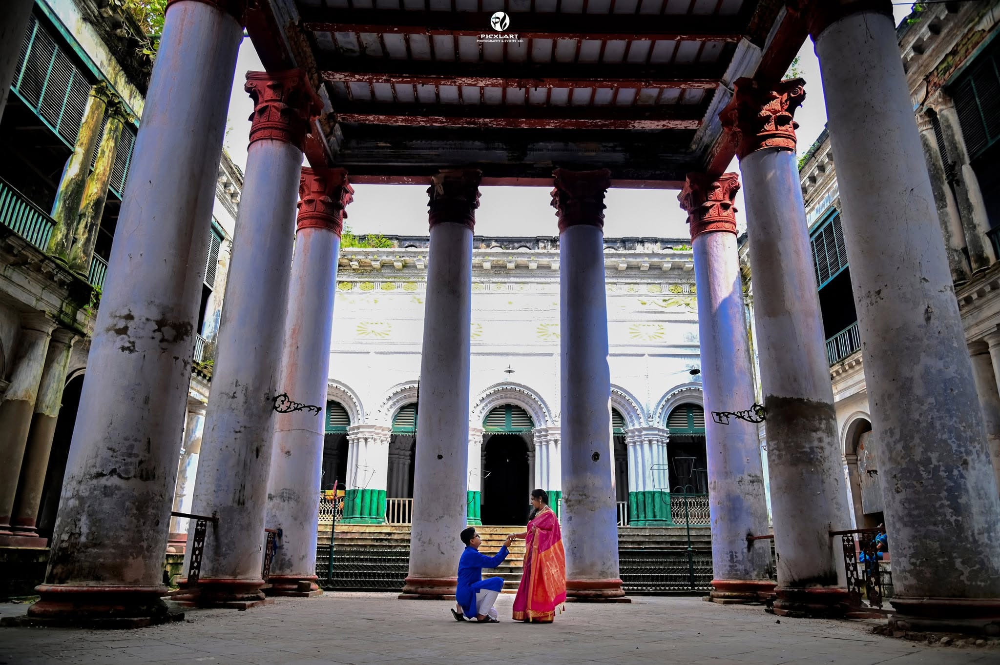
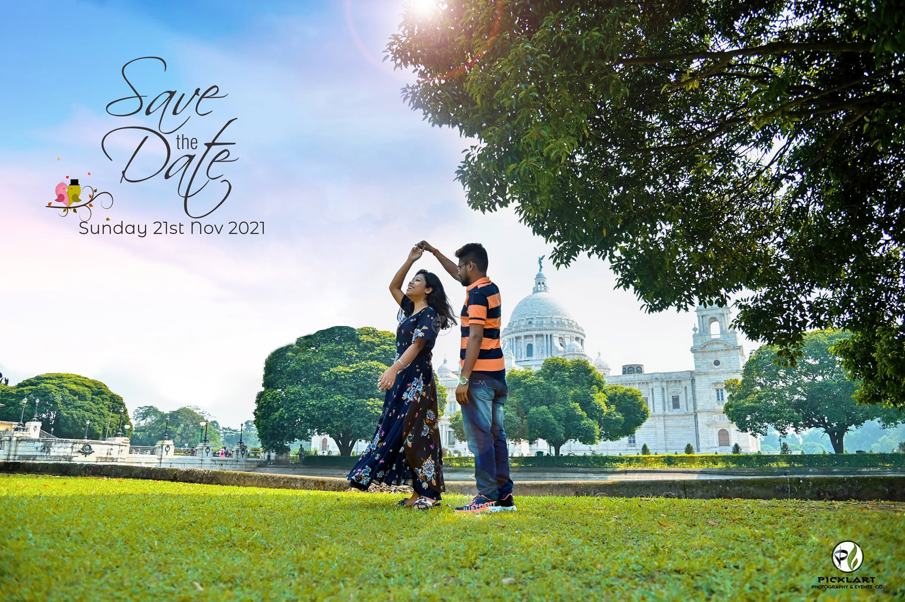

A pre-wedding shoot is more than taking pretty pictures—it is about capturing your chemistry in a backdrop that matches your personality. Whether you love grand aristocratic Rajbaris, rustic European colonial architecture, serene riverfronts, or endless golden mustard fields, Hooghly and Kolkata offer incredible diversity for every couple.
Based in Serampore, Hooghly, our team at Picxlart Photography has put together this complete, honest guide featuring entry fees, contact details, and practical tips to help you plan your shoot effortlessly.
Part 1: Historic & Royal Heritage Locations in Hooghly
Hooghly is world-famous for its European colonial history (Danish, French, Portuguese, and British) combined with grand Bengali zamindari mansions.
1. Serampore Rajbari Paid Spot
If you dream of a royal traditional Bengali look, Serampore Rajbari is one of the finest choices. The grand aristocratic courtyard, classic pillars, and vintage aura create magnificent frames.
- Key Facility: Dedicated makeup rooms are provided for comfortable outfit changes and touch-ups.
- Booking Fee & Contact: Charged on an hourly slot basis (per 2-hour package). For all booking inquiries and slot information, call directly at +91 98744 82797 or +91 98361 94266.
- Best For: Traditional sarees, Dhoti-Panjabi, and royal bridal portraits.
2. Garalgacha Jamidar Bari (Dankuni) Paid Spot
Located near Dankuni on the Baluhati - Chanditala Road (approx. 25-30 km from Kolkata), this historic property offers an authentic zamindari setting with classic Thakur Dalan, traditional courtyards, and the adjacent lush Mukherjee Gardens.
- Contact for Bookings: Tridibesh Mukherjee (+91 93394 96732) or Caretaker Mr. Amarnath Bhara (+91 98319 83059).
- Shoot Types Allowed: Pre-wedding photo & video sessions, music videos, dance covers, and commercial brand shoots.
- Vibe: Royal, vintage Bengali aristocratic charm.
3. The Denmark Tavern (Serampore) Paid Spot
Situated on N.N. Roy Street along the Serampore riverfront, this 238-year-old restored Danish building and café offers vintage European architecture, high ceilings, rustic brickwork, and warm outdoor lighting.
- Contact Details: Official phone 033 2652 4736. Tip: We highly recommend visiting the spot in person beforehand to review layout and finalize your booking.
- Best For: Western formals, gowns, classy coffee-date concepts, and cinematic evening shots.
4. St. Olav’s Church (Serampore) Free Outdoor Area
Located in Tin Bazar and built in 1806, this iconic white church features classic Danish colonial pillars and serene historical courtyards.
- Entry Details: Shooting in the outdoor lawn area is free. Indoor shooting is strictly restricted or permitted only upon special prior request.

5. Hooghly Imambara (Chinsurah) Public / Entry Ticket
Famous for its grand Victorian clock towers, long arched hallways, and high balconies overlooking the Hooghly River. It gives a timeless, vintage aesthetic.
- Timings: 8:00 AM to 5:30 PM.
6. Hangseshwari Temple (Bansberia) Flexible Entry / Permission Needed
Famous for its unique 13-towered lotus-inspired architecture and the adjacent stone Anant Vasudeva temple. Photography inside the main temple sanctuary is generally restricted, but outdoor frames can be done upon request or local permissions. Small maintenance fees may sometimes apply.
7. Bandel Church (Basilica of the Holy Rosary) Public
Built in 1599, offering European stone facades, quiet green lawns, and a peaceful ambiance. (Open from 8:00 AM to 4:50 PM).
Part 2: Scenic Riverfronts, Islands & Natural Landscapes in Hooghly
8. Sabuj Deep River Island (Balagarh) Scenic Island / Off-Peak Shooting
A breathtaking 100-acre river island situated at the confluence of the Behula and Hooghly rivers in Balagarh (Hooghly district). While popular as a picnic spot, off-peak hours offer a peaceful, serene environment for pre-wedding photography.
- Key Attractions: Lush green gardens, watchtower views, Ganges boat rides, and Sabujdweep Tourism Property cottages.
- Timings: Open daily from 8:00 AM to 6:00 PM.
- How to Reach: Local train from Howrah/Sealdah to Somra Bazar station -> Rickshaw to Sukhadia village (Sabuj Deep Ghat) -> Motorboat cross-over (ferry fare approx. ₹25–₹120 depending on private or shared boat).
9. Serampore Jolkol & Serampore Ghat Free Public Spot
Located near Serampore College, the historic Jolkol area and Serampore Riverfront offer a rustic, old-world charm along the riverbank. Perfect for casual evening frames and ferry ride shots.
10. Singur & Nalikul Mustard Fields (Sorsekhet) Natural Spot
If you love vibrant, natural, DDLJ-style romantic frames, heading towards rural Hooghly (Singur, Nalikul, and surrounding villages) during winter (December–January) unlocks endless bright yellow mustard fields (Sorsekhet), open green horizons, mud houses, and peaceful village paths.
11. Chandannagar Strand Scenic Nature
A beautiful paved promenade decorated with vintage French-colonial lamps—unbeatable for romantic sunset silhouettes along the Hooghly riverbank.
Part 3: Iconic Pre-Wedding Locations in Kolkata
Kolkata brings high-energy urban vibes, historic monuments, and luxury resort options.
12. Princep Ghat & Hooghly Riverfront Free Public Spot
The iconic Greek-style white pillars of Princep Ghat with the Vidyasagar Setu in the background make this Kolkata's #1 shoot spot. You can also hire a traditional wooden boat for romantic river shots at golden hour.
13. Eco Park & Eco Island (New Town) Paid Entry
Offering huge variety in a single place—from modern glass bridges and green tea gardens to replicas of the 7 Wonders of the World.
14. Sovabazar Rajbari & Bow Barracks Heritage Vibe
For classic yellow taxis, narrow heritage alleys, red-brick European houses (Bow Barracks), or grand traditional Thakur Dalan (Sovabazar Rajbari), Kolkata's North district is unmatched.

15. Luxury Resorts (Bawali Rajbari, Ibiza Resort, Vedic Village) Paid Booking
If you prefer complete privacy, changing room luxury, and royal aesthetics, private resort properties around Kolkata provide breathtaking photo opportunities.
Looking for More Exclusive Kolkata Locations?
We have a separate, dedicated guide focusing entirely on Kolkata's top vintage streets, luxury resorts, and hidden gems!
Read: Amazing Locations For Pre Wedding Photography In KolkataTips for Planning Your Pre-Wedding Shoot
To get the best out of your session:
- Choose Outfits Wisely: Match light pastel colors for greenery/nature spots and bright silk sarees/gowns for heritage Rajbaris.
- Timing is Key: Early morning (6:30 AM to 9:00 AM) or late afternoon (4:00 PM to 6:00 PM) offers soft, glowing lighting.
- Plan Travel Routes: If you reside around Serampore/Hooghly, combining Serampore Rajbari with Denmark Tavern or Chandannagar Strand saves time and travel fatigue.
Ready to Capture Your Love Story?
At Picxlart, we turn your romantic moments into cinematic visual stories. Based in Hooghly, we serve across Kolkata, West Bengal, and Destination Weddings Pan-India.
Book Your Pre-Wedding Shoot